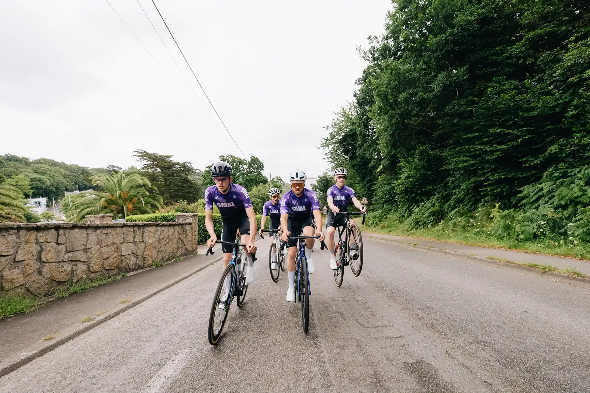
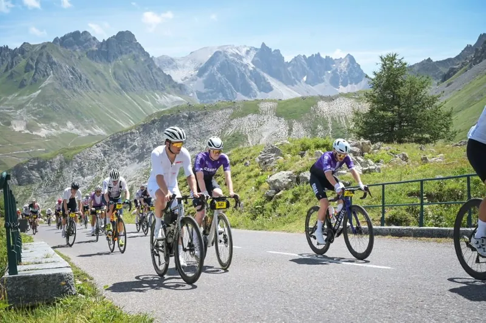
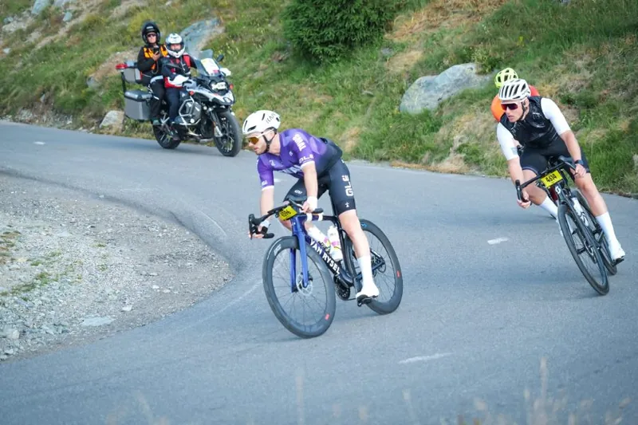
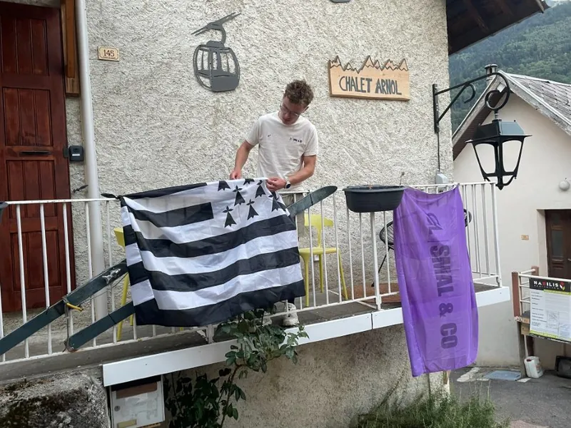
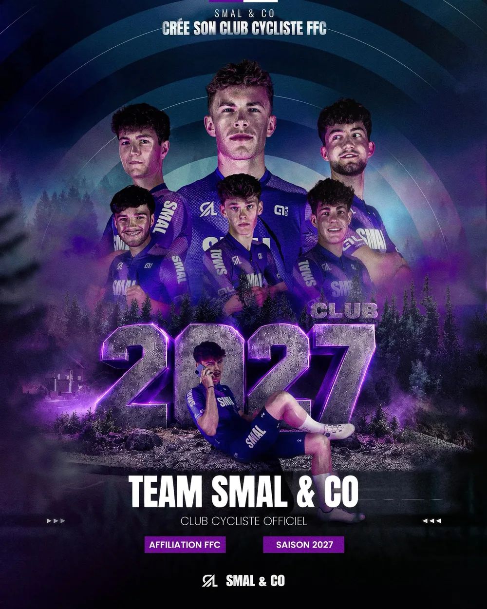
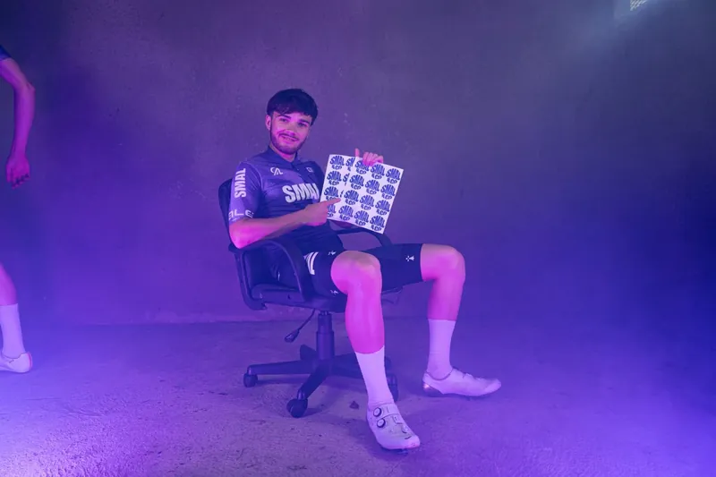
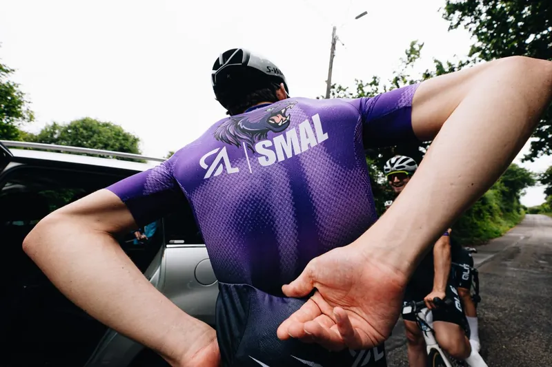
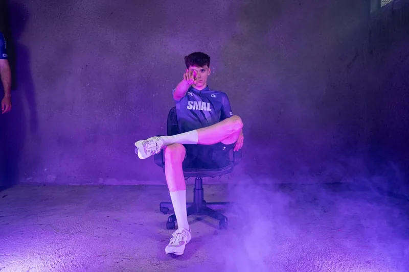

Pôle 01 · Team cyclisme
Cyclisme
L’équipe cycliste de compétition de SMAL & CO, affiliée à la FFC. Rigueur, esprit d’équipe et ambitions régionales et nationales.

Nos missions
L’humain d’abord, la performance ensuite.
- Affiliation
- FFC · 16 septembre 2026
- Effectif
- 15 licenciés FFC (10 Team)
- Partenaire
- Hobby Cycles Brest
L’humain d’abord : rouler ensemble, progresser ensemble, puis performer.
Nos coureurs sont accompagnés : nutrition Overstim.s, mécanique, photo et vidéo de chaque course.
19 juillet 2026 · Alpe d’Huez
L’Étape du Tour, un premier jalon
Un test grandeur nature avant la compétition : les sept pionniers au départ, direction l’Alpe d’Huez.



Saison 2027 · Fédération Française de Cyclisme
La Team SMAL & CO 2027

Dès 2027, SMAL & CO aligne sa propre équipe de compétition FFC : une équipe structurée, des coureurs accompagnés et des résultats construits ensemble.
- Structurer l’équipe de compétition 2027
- Engager des coureurs sur les épreuves régionales FFC
- Relancer les Social Rides estivaux et faire grandir le club Strava
- Créer des événements sur le bassin brestois




Envie de nous soutenir ?
Suivez nos actualités, échangez avec nous et accompagnez le développement du collectif sur nos réseaux officiels.